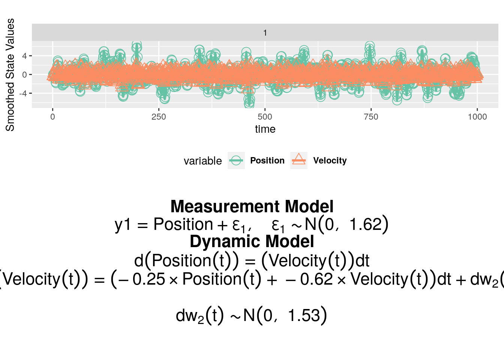
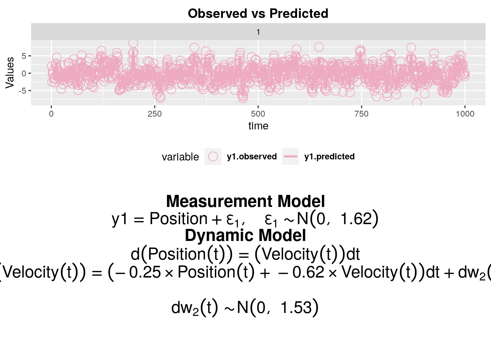
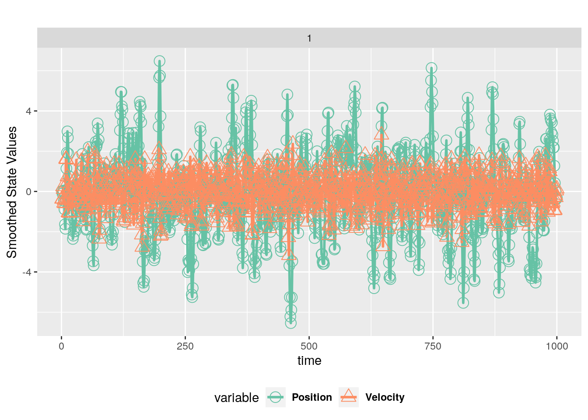

demo("LinearSDE", package = "dynr")
demo(LinearSDE)
---- ~~~~~~~~~
> #------------------------------------------------------------------------------
> # Author: Michael D. Hunter
> # Date: 2016-05-24
> # Filename: LinearSDE.R
> # Purpose: An illustrative example of using dynr to fit
> # a linear stochastic differential equation model
> #------------------------------------------------------------------------------
>
> #rm(list=ls(all=TRUE))
>
> #------------------------------------------------------------------------------
> # Load packages
> require(dynr)Loading required package: dynrLoading required package: ggplot2
> #------------------------------------------------------------------------------
> # Example 2
> # Damped linear oscillator example
> # There is measurement noise and there are unmeasured dynamic disturbances.
> # These disturbances are called dynamic noise.
> # There is a single indicator.
> # It is somewhat open to figure out what combination of variables can really be
> # estimated for this kind of model. It is clear that measurement noise and
> # SOME dynamic noise can be estimated, but not all.
>
>
> #------------------------------------------------------------------------------
> # Define all the model components via the RECIPE functions
>
> # measurement
> # this is the factor loadings matrix, Lambda in SEM notation or C in OpenMx notation
> meas <- prep.measurement(
+ values.load=matrix(c(1, 0), 1, 2), # starting values and fixed values
+ params.load=matrix(c('fixed', 'fixed'), 1, 2),
+ state.names=c("Position","Velocity"),
+ obs.names=c("y1")) # parameter numbers or indication that parameter is fixed
> # Look
> meas
$values.load
[[1]]
Position Velocity
y1 1 0
$params.load
[[1]]
Position Velocity
y1 "fixed" "fixed"
$values.exo
list()
$params.exo
list()
$values.int
list()
$params.int
list()
$state.names
[1] "Position" "Velocity"
$obs.names
[1] "y1"
$exo.names
character(0)
> # no free parameters in the factor loadings
>
>
> # observation and dynamic noise components
> # the latent noise is the dynamic noise, Psi in SEM notation or Q in OpenMx notation
> # the observed noise is the measurement noise, Theta in SEM notation or R in OpenMx notation
> ecov <- prep.noise(
+ values.latent=diag(c(0, 1), 2), params.latent=diag(c('fixed', 'dnoise'), 2), # uses free parameter 3
+ values.observed=diag(1.5, 1), params.observed=diag('mnoise', 1)) # uses free parameter 4
> # Look
> ecov
$values.latent
[[1]]
[,1] [,2]
[1,] 0 0
[2,] 0 1
$params.latent
[[1]]
[,1] [,2]
[1,] "fixed" "fixed"
[2,] "fixed" "dnoise"
$values.observed
[[1]]
[,1]
[1,] 1.5
$params.observed
[[1]]
[,1]
[1,] "mnoise"
$values.latent.inv.ldl
[[1]]
[,1] [,2]
[1,] -13.81551 0
[2,] 0.00000 0
$values.observed.inv.ldl
[[1]]
[,1]
[1,] 0.4054651
> # dynr takes steps to make sure covariance matrices are positive definite
>
> #ecov <- prep.noise(
> # values.latent=rep(list(diag(c(0, 1), 2)), 2), params.latent=rep(list(diag(c('fixed', 'dnoise'), 2)), 2), # uses free parameter 3
> # values.observed=list(diag(0.5, 1), diag(1.5, 1)), params.observed=list(diag('mnoise1', 1), diag('mnoise2', 1))) # uses free parameter 4
>
>
> # initial covariances and latent state values
> # These initialize the recursive algorithm (extended Kalman filter) that dynr uses
> # These are x0 and P0 in OpenMx notation
> initial <- prep.initial(
+ values.inistate=c(0, 1),
+ params.inistate=c('inipos', 'fixed'), #initial position is free parameter 5, initial slope is fixed at 1
+ values.inicov=diag(1, 2),
+ params.inicov=diag('fixed', 2)) #initial covariance is fixed to a diagonal matrix of 1s.
> #initial <- prep.initial(
> # values.inistate=list(c(0, 1), c(0, 1)),
> # params.inistate=list(c('inipos', 'fixed'), c('fixed', 'inivel')), #initial position is free parameter 5, initial slope is fixed at 1
> # values.inicov=list(diag(1, 2), diag(1, 2)),
> # params.inicov=list(diag('fixed', 2), diag('fixed', 2))) #initial covariance is fixed to a diagonal matrix of 1s.
>
>
> # define the differential equation
> dynamics <- prep.matrixDynamics(
+ values.dyn=matrix(c(0, -0.1, 1, -0.2), 2, 2),
+ params.dyn=matrix(c('fixed', 'spring', 'fixed', 'friction'), 2, 2), #uses parameters 1 and 2
+ isContinuousTime=TRUE)
> # Data
> data(Oscillator)
> data <- dynr.data(Oscillator, id="id", time="times", observed="y1")
> # Prepare for cooking
> # put all the recipes together
> model <- dynr.model(dynamics=dynamics, measurement=meas, noise=ecov, initial=initial, data=data, outfile="LinearSDE.c")
> # set upper bounds, if you want
> model$ub <- c(100, 100, 100, 100, 100)
> model$ub <- c(friction=101, spring=100, inipos=103, 100, 100)
> model$ub['dnoise'] <- 99
> printex(model,ParameterAs=model$param.names,show=FALSE,printInit=TRUE,
+ outFile="LinearSDE.tex")
> #tools::texi2pdf("LinearSDE.tex")
> #system(paste(getOption("pdfviewer"), "LinearSDE.pdf"))
>
>
> # Estimate free parameters
> res <- dynr.cook(model, verbose = FALSE)
[1] "Get ready!!!!"
May I present to you your error messages?
using C compiler: ‘gcc (Ubuntu 11.3.0-1ubuntu1~22.04.1) 11.3.0’
Optimization function called.
Starting Hessian calculation ...
Finished Hessian calculation.
Original exit flag: 3
Modified exit flag: 3
Optimization terminated successfully: ftol_rel or ftol_abs was reached.
Original fitted parameters: -0.2507235 -0.6235575 0.4257371 0.4846102
0.1352342
Transformed fitted parameters: -0.2507235 -0.6235575 1.530718 1.623542
0.1352342
Doing end processing
Successful trial
Total Time: 4.929697
Backend Time: 4.038108
> # Examine results
> summary(res)
Coefficients:
Estimate Std. Error t value ci.lower ci.upper Pr(>|t|)
spring -0.25072 0.03249 -7.716 -0.31441 -0.18704 <2e-16 ***
friction -0.62356 0.11623 -5.365 -0.85137 -0.39575 <2e-16 ***
dnoise 1.53072 0.44206 3.463 0.66429 2.39714 0.0003 ***
mnoise 1.62354 0.10466 15.512 1.41841 1.82867 <2e-16 ***
inipos 0.13523 1.41982 0.095 -2.64756 2.91803 0.4621
---
Signif. codes: 0 '***' 0.001 '**' 0.01 '*' 0.05 '.' 0.1 ' ' 1
-2 log-likelihood value at convergence = 4067.87
AIC = 4077.87
BIC = 4102.41
> plotFormula(model, res@transformed.parameters)
> #ggsave("LinearSDEPlotFml.pdf")
> #------------------------------------------------------------------------------
> # some miscellaneous nice functions
>
> plot(res, dynrModel=model, textsize=6, style = 1)
> plot(res, dynrModel=model, textsize=6, style = 2)
> autoplot(res, model, numSubjDemo=1)
> # get the estimated parameters from a cooked model/data combo
> coef(res)
spring friction dnoise mnoise inipos
-0.2507235 -0.6235575 1.5307183 1.6235420 0.1352342
> # get the log likelihood, AIC, and BIC from a cooked model/data combo
> logLik(res)
'log Lik.' -2033.937 (df=5)
> AIC(res)
[1] 4077.875
> BIC(res)
[1] 4102.414
> # compare true parameters to estimated ones
> trueParams <- c(-.3, -.7, 2.2, 1.5, 0)
> data.frame(name=c('Spring', 'Damping', 'DynVar', 'MeasVar', 'IniPos'), true=trueParams, estim=coef(res))
name true estim
spring Spring -0.3 -0.2507235
friction Damping -0.7 -0.6235575
dnoise DynVar 2.2 1.5307183
mnoise MeasVar 1.5 1.6235420
inipos IniPos 0.0 0.1352342
> (CI <- confint(res))
2.5 % 97.5 %
spring -0.3144090 -0.1870380
friction -0.8513675 -0.3957474
dnoise 0.6642948 2.3971418
mnoise 1.4184091 1.8286749
inipos -2.6475642 2.9180326
> # Check that all true parameters are within the confidence intervals of the estimated params
> withinIntervals <- CI[,1] < trueParams & trueParams < CI[,2]
> withinIntervals
spring friction dnoise mnoise inipos
TRUE TRUE TRUE TRUE TRUE
> # all should be true
>
> # compare estimated smoothed latent states to true
> # simulated ones
> sm <- data.frame(t(res@eta_smooth_final))
> cor(sm, Oscillator[,c('x1', 'x2')])
x1 x2
X1 0.94333283 0.01440661
X2 0.03430961 0.69468620
> #------------------------------------------------------------------------------
> # End
> #save(model,res,file="LinearSDE.RData")